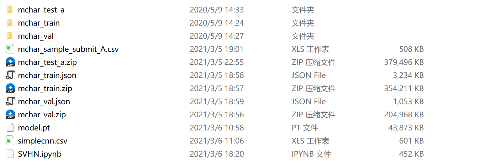
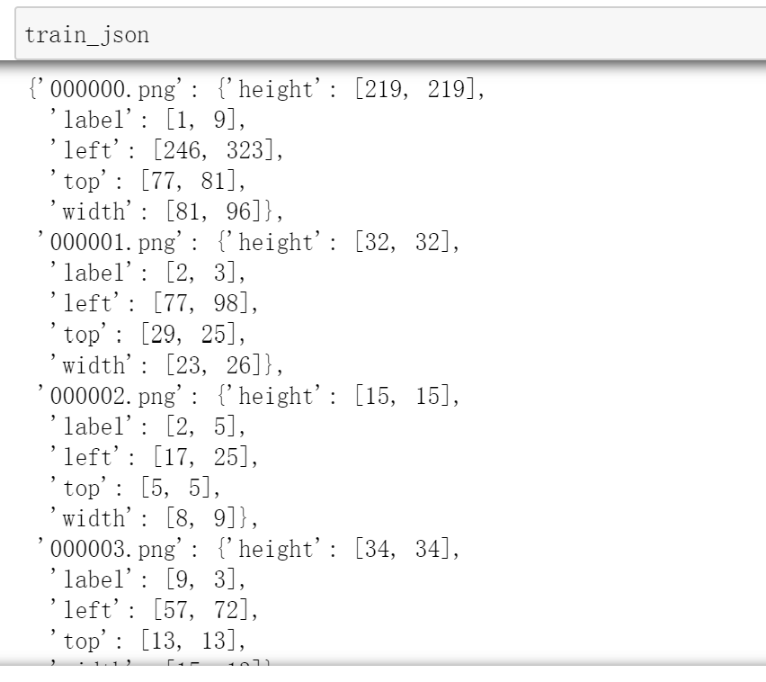
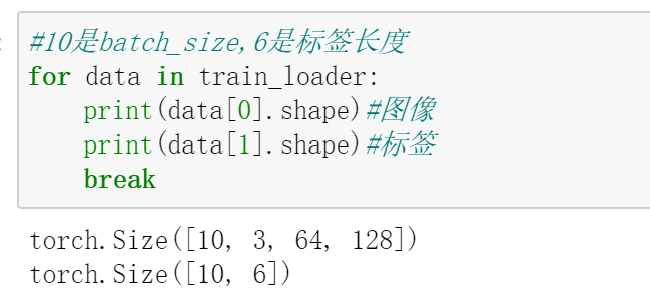

本文属于学习帖，用于记录“街景字符编码识别”问题的 baseline 解决方案。原代码链接见文末，其中有些小的错误已更正。
赛题来源自Google街景图像中的门牌号数据集（The Street View House Numbers Dataset, SVHN），并根据一定方式采样得到比赛数据集。
训练集数据包括3W张照片，验证集数据包括1W张照片，每张照片包括颜色图像和对应的编码类别和具体位置；测试集A包括4W张照片，测试集B包括4W张照片。
本赛题需要选手识别图片中所有的字符，为了降低比赛难度，我们提供了训练集、验证集和测试集中字符的位置框。
一个比较有效的方法是先对字符做检测（使用目标检测技术），但这里仅使用baseline方案。
baseline解决方案是将其转为定长字符识别问题。
具体来说，所有字符的最大长度不超过6位，因此将不足6位的字符填充到6位。因为所有字符全部取值为0到9共10个数字，所以用10作为填补的标记，
导入相关库+必要设置 1 2 3 4 5 6 7 8 9 10 11 12 13 14 15 16 17 18 19 20 21 22 23 import numpy as npimport matplotlib.pyplot as pltimport os, sys, glob, shutil, jsonimport cv2from PIL import Imageimport torchfrom torch.utils.data.dataset import Datasetimport torchvision.transforms as transformsimport torchvision.models as modelsimport torchvision.transforms as transformsimport torchvision.datasets as datasetsimport torch.nn as nnimport torch.nn.functional as Fimport torch.optim as optimfrom torch.autograd import Variablefrom tqdm import tqdm, tqdm_notebookos.environ["CUDA_VISIBLE_DEVICES" ] = '0' torch.manual_seed(0 ) torch.backends.cudnn.deterministic = False torch.backends.cudnn.benchmark = True device = torch.device("cuda" if torch.cuda.is_available() else "cpu" )
准备数据 
1 2 3 4 5 6 7 8 9 10 11 12 13 14 15 16 17 18 19 20 21 22 23 class SVHNDataset (Dataset ): def __init__ (self, img_path, img_label, transform=None ): self.img_path = img_path self.img_label = img_label if transform is not None : self.transform = transform else : self.transform = None def __getitem__ (self, index ): img = Image.open (self.img_path[index]).convert('RGB' ) if self.transform is not None : img = self.transform(img) lbl = np.array(self.img_label[index], dtype=np.int ) lbl = list (lbl) + (6 - len (lbl)) * [10 ] return torch.tensor(img), torch.from_numpy(np.array(lbl[:6 ])) def __len__ (self ): return len (self.img_path)
训练集数据：
1 2 3 4 train_path = glob.glob('mchar_train/*.png' ) train_path.sort() train_json = json.load(open ('mchar_train.json' )) train_label = [train_json[x]['label' ] for x in train_json]

1 2 3 4 5 6 7 8 9 10 11 12 13 train_loader = torch.utils.data.DataLoader( SVHNDataset(train_path, train_label, transforms.Compose([ transforms.Resize((64 , 128 )), transforms.ColorJitter(0.3 , 0.3 , 0.2 ), transforms.RandomRotation(5 ), transforms.ToTensor(), transforms.Normalize([0.485 , 0.456 , 0.406 ], [0.229 , 0.224 , 0.225 ]) ])), batch_size=10 , shuffle=False , num_workers=0 , )

验证集数据：
1 2 3 4 5 6 7 8 9 10 11 12 13 14 15 16 17 18 19 val_path = glob.glob('mchar_val/*.png' ) val_path.sort() val_json = json.load(open ('mchar_val.json' )) val_label = [val_json[x]['label' ] for x in val_json] val_loader = torch.utils.data.DataLoader( SVHNDataset(val_path, val_label, transforms.Compose([ transforms.Resize((64 , 128 )), transforms.ToTensor(), transforms.Normalize([0.485 , 0.456 , 0.406 ], [0.229 , 0.224 , 0.225 ]) ])), batch_size=40 , shuffle=False , num_workers=0 , )
模型构建 这里使用了resnet18预训练好的模型。
1 2 3 4 5 6 7 8 9 10 11 12 13 14 15 16 17 18 19 20 21 22 23 24 25 26 27 class SVHN_Model1 (nn.Module ): def __init__ (self ): super (SVHN_Model1, self).__init__() model_conv = models.resnet18(pretrained=True ) model_conv.avgpool = nn.AdaptiveAvgPool2d(1 ) model_conv = nn.Sequential(*list (model_conv.children())[:-1 ]) self.cnn = model_conv self.fc1 = nn.Linear(512 , 11 ) self.fc2 = nn.Linear(512 , 11 ) self.fc3 = nn.Linear(512 , 11 ) self.fc4 = nn.Linear(512 , 11 ) self.fc5 = nn.Linear(512 , 11 ) self.fc6 = nn.Linear(512 , 11 ) def forward (self, img ): feat = self.cnn(img) feat = feat.view(feat.shape[0 ], -1 ) c1 = self.fc1(feat) c2 = self.fc2(feat) c3 = self.fc3(feat) c4 = self.fc4(feat) c5 = self.fc5(feat) c6 = self.fc6(feat) return c1, c2, c3, c4, c5,c6
其中AdaptiveAvgPool2d用法举例如下
模型训练相关 训练函数
1 2 3 4 5 6 7 8 9 10 11 12 13 14 15 16 17 18 19 20 21 22 23 24 25 26 def train (train_loader, model, criterion, optimizer, epoch ): model.train() train_loss = [] for i, (inputs, target) in enumerate (train_loader): inputs=inputs.to(device) target=target.to(device) c0, c1, c2, c3, c4 ,c5= model(inputs) loss = criterion(c0, target[:, 0 ].long()) + \ criterion(c1, target[:, 1 ].long()) + \ criterion(c2, target[:, 2 ].long()) + \ criterion(c3, target[:, 3 ].long()) + \ criterion(c4, target[:, 4 ].long())+\ criterion(c5, target[:, 5 ].long()) optimizer.zero_grad() loss.backward() optimizer.step() train_loss.append(loss.item()) return np.mean(train_loss)
验证函数
1 2 3 4 5 6 7 8 9 10 11 12 13 14 15 16 17 18 19 20 def validate (val_loader, model, criterion ): model.eval () val_loss = [] with torch.no_grad(): for i, (inputs, target) in enumerate (val_loader): inputs=inputs.to(device) target=target.to(device) c0, c1, c2, c3, c4 ,c5= model(inputs) loss = criterion(c0, target[:, 0 ].long()) + \ criterion(c1, target[:, 1 ].long()) + \ criterion(c2, target[:, 2 ].long()) + \ criterion(c3, target[:, 3 ].long()) + \ criterion(c4, target[:, 4 ].long()) +\ criterion(c5, target[:, 5 ].long()) val_loss.append(loss.item()) return np.mean(val_loss)
预测函数
1 2 3 4 5 6 7 8 9 10 11 12 13 14 15 16 17 18 19 20 21 22 23 24 25 26 27 28 29 30 31 def predict (test_loader, model, tta=10 ): model.eval () test_pred_tta = None for _ in range (tta): test_pred = [] with torch.no_grad(): for i, (inputs, target) in enumerate (test_loader): inputs=inputs.to(device) target=target.to(device) c0, c1, c2, c3, c4 ,c5= model(inputs) output = np.concatenate([ c0.data.cpu().numpy(), c1.data.cpu().numpy(), c2.data.cpu().numpy(), c3.data.cpu().numpy(), c4.data.cpu().numpy(), c5.data.cpu().numpy()], axis=1 ) test_pred.append(output) test_pred = np.vstack(test_pred) if test_pred_tta is None : test_pred_tta = test_pred else : test_pred_tta += test_pred return test_pred_tta
设置训练参数
1 2 3 4 5 6 model = SVHN_Model1().to(device) criterion = nn.CrossEntropyLoss() optimizer = torch.optim.Adam(model.parameters(), 0.001 ) best_loss = 1000.0
开始训练
1 2 3 4 5 6 7 8 9 10 11 12 13 14 15 16 17 18 19 20 21 22 23 24 25 26 27 28 29 30 for epoch in range (10 ): train_loss = train(train_loader, model, criterion, optimizer, epoch) val_loss = validate(val_loader, model, criterion) val_label = ['' .join(map (str , x)) for x in val_loader.dataset.img_label] val_predict_label = predict(val_loader, model, 1 ) val_predict_label = np.vstack([ val_predict_label[:, :11 ].argmax(1 ), val_predict_label[:, 11 :22 ].argmax(1 ), val_predict_label[:, 22 :33 ].argmax(1 ), val_predict_label[:, 33 :44 ].argmax(1 ), val_predict_label[:, 44 :55 ].argmax(1 ), val_predict_label[:, 55 :66 ].argmax(1 ) ]).T val_label_pred = [] for x in val_predict_label: val_label_pred.append('' .join(map (str , x[x!=10 ]))) val_char_acc = np.mean(np.array(val_label_pred) == np.array(val_label)) print ('Epoch: {0}, Train loss: {1} \t Val loss: {2}' .format (epoch, train_loss, val_loss)) print ('Val Acc' , val_char_acc) if val_loss < best_loss: best_loss = val_loss torch.save(model.state_dict(), './model.pt' )
np.vstack用法示例如下
测试 准备测试数据
1 2 3 4 5 6 7 8 9 10 11 12 13 14 15 16 17 18 19 test_path = glob.glob('mchar_test_a/*.png' ) test_path.sort() test_label = [[1 ]] * len (test_path) test_loader = torch.utils.data.DataLoader( SVHNDataset(test_path, test_label, transforms.Compose([ transforms.Resize((64 , 128 )), transforms.ToTensor(), transforms.Normalize([0.485 , 0.456 , 0.406 ], [0.229 , 0.224 , 0.225 ]) ])), batch_size=40 , shuffle=False , num_workers=0 , )
开始测试，代码和训练部分类似
1 2 3 4 5 6 7 8 9 10 11 12 13 14 15 test_predict_label = predict(test_loader, model, 1 ) test_label = ['' .join(map (str , x)) for x in test_loader.dataset.img_label] test_predict_label = np.vstack([ test_predict_label[:, :11 ].argmax(1 ), test_predict_label[:, 11 :22 ].argmax(1 ), test_predict_label[:, 22 :33 ].argmax(1 ), test_predict_label[:, 33 :44 ].argmax(1 ), test_predict_label[:, 44 :55 ].argmax(1 ), test_predict_label[:, 55 :66 ].argmax(1 ) ]).T test_label_pred = [] for x in test_predict_label: test_label_pred.append('' .join(map (str , x[x!=10 ])))
测试完成后，test_label_pred中便存储了最终的预测结果，将其写入.csv作为提交文件
1 2 3 4 import pandas as pddf_submit = pd.read_csv('mchar_sample_submit_A.csv' ) df_submit['file_code' ] = test_label_pred df_submit.to_csv('simplecnn.csv' , index=None )
提交结果 点击上传文件，得到成绩